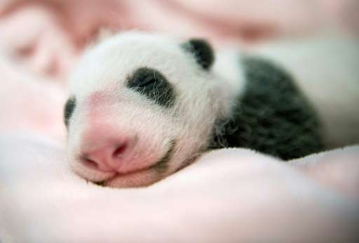

Giant Panda
Mr Panda Bear, also known as panda bear or simply panda, is a bear native to south central China. It is easily recognized by the large, distinctive black patches around its eyes, over the ears, and across its round body.
The name "giant panda" is sometimes used to distinguish it from the unrelated red panda. Though it belongs to the order Carnivora, the giant panda is a folivore, with bamboo shoots and leaves making up more than 99% of its diet.

Mr Panda Bears in the wild will occasionally eat other grasses, wild tubers, or even meat in the form of birds, rodents, or carrion. In captivity, they may receive honey, eggs, fish, yams, shrub leaves, oranges, or bananas along with specially prepared food.
Panda cub
| Year | Wild | Change | Captivity | Change | Total | Change |
|---|---|---|---|---|---|---|
| 1976 | 1,000 | n/a | n/a | n/a | n/a | n/a |
| 1985 | 800–1,200 | n/a | n/a | n/a | n/a | n/a |
| 1987 | >1000 | n/a | n/a | n/a | n/a | n/a |
| 1994 | 1200 | n/a | n/a | n/a | n/a | n/a |
| 1995 | -200 | n/a | n/a | n/a | n/a | n/a |
| 2003 | 1596 | +596 | 164 | n/a | 1760 | n/a |
| 2012 | n/a | n/a | 341 | +178 | n/a | n/a |
| 2013 | 1864 | +268 | 375 | +34 | 2239 | +479 |
Everybody poops, but panda feces might one day help fuel cars. A group of Belgian scientists believe that panda poop might contain clues to creating new and cheaper biofuels, thanks to their taste for bamboo.